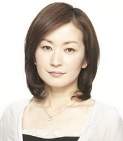

Chiaki Kanou is a voice actress in Japan. She done work in Kokoro Connect and K-ON.
- Gender: Female
- Birthday: November 10, 1970
- Birthplace: Aichi, Japan
| |
Chiaki Kanou is a voice actress in Japan. She done work in Kokoro Connect and K-ON.
|
 |
|---|
 |
Aki Taylor |
|
Aki Taylor is Max's mother and Dr. Taylor's wife. She is a sketchbook artist and housewife. |